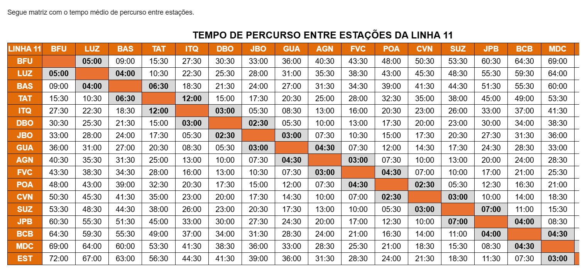

Trens a caminho
Novo aviso
Preencha os 4 passos e toque em Começar. O app conta o tempo e avisa antes de o trem chegar.
Testar som e notificações
Esta janela pode ser minimizada. O som, a voz, a notificação e a janela fixada continuam funcionando.
Tabela de tempos
Tempo médio entre estações vizinhas da Linha 11. Viagens longas somam os trechos do caminho. Atrasos na via não entram na conta.

Histórico de avisos
Nenhum aviso ainda.
É uma estimativa pela tabela de tempos. Ela não substitui a comunicação com o CCO nem a proteção de quem está na via.